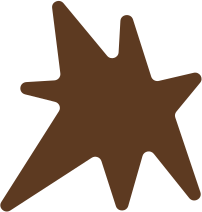
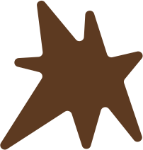

Microstamperia è un laboratorio condiviso che punta a insegnare, progettare ed esplorare' le possibilità del linguaggio grafico e scritto.
vieni a trovarci
Utilizziamo una tecnologia risograph,
adatta per
la micro-editoria e per l’ambiente.


Chi siamo
Micro Stamperia Quarticciolo è un progetto che parte dalla carta stampata, dall’intreccio di diverse tecniche di stampa e dalla pratica artigianale, per sperimentare forme di apprendimento attivo. Il progetto si fonda sul laboratorio, uno spazio di incontro e scambio nell’ambito dell’autoproduzione editoriale, necessario per svolgere attività manuali, con diverse tecniche di disegno, illustrazione, stampa e legatoria e per ospitare momenti di formazione teorica e tecnica, come workshop, seminari, iniziative pubbliche.
Microstamperia è un progetto vincitore del bando VitaminaG nell’ambito del programma GenerAzioniGiovani.it finanziato dalle Politiche Giovanili della Regione Lazio con il sostegno del Dipartimento per la Gioventù
Con il sostegno di
nell'ambito di

stampa con noi
-
Primo volume del Romanzo del Pratone, stampato in collaborazione con il quartiere di Torre Spaccata
-
Secondo volume del Romanzo del Pratone, stampato in collaborazione con il quartiere di Torre Spaccata

Raccolta di storie partigiane raccolte dagli abitanti del Quarticciolo
-
Fanzine riguardo la città, realizzato tramite la risograph
-
Brochure realizzata in prossimazione della discussione offerta dalla fondazione Michelle
Progetti
Le edizioni, i laboratori e le attività della Microstamperia